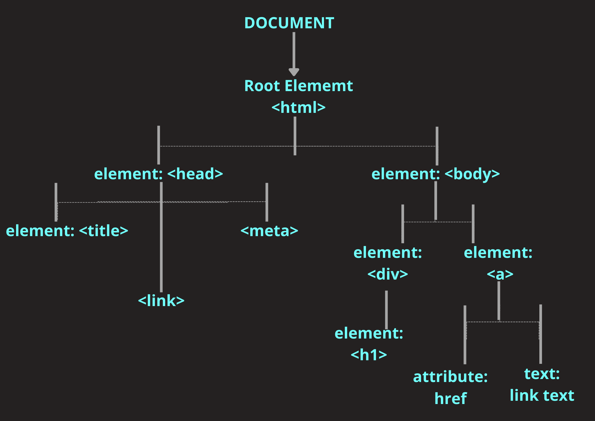

JS Fundamentals
How is JS related to HTML and CSS?
Imagine HTML is the skeleton. It forms the structure of your webpage. Then imagine CSS is the outer body, making your page look how it should, adding the visual elements to make it stand out, such as eye and hair colour. Then imagine Javascript as the muscles and heart, controlling your movements and keeping your blood pumping around your body and making sure you carry out your daily functions as a human being... and webpage!
Control Flow and Loops
Control Flow in Javascript is how your computer runs code from top to bottom. Generally code is read from the top line to the bottom line unless there is a loop, function or conditional statement that changes the order of the flow as new insutructions need to be carried out before the original code can continue to flow.
Think of this in terms of an everyday task such as feeding the dog. First, you go to the cupboard, get out the dog food, put the food in the dogs bowl (while giving him a pat for being the goodest boy!), tell him he can eat and then open the cupboard again to put the food away. Normally there wouldn't be any change to this sequence. Unless you go to the cupboard and there isn't any dog food! Then a loop would come into play as you'd need to add another set of instructions to purchase more dog food. Once you have completed this loop (bought more dog food) then you can continue in the sequence or 'control flow'.
The DOM
The DOM or 'Document Object Model' is the way in which Javascript interacts with content within a website, such as HTML and CSS. It is used to easily navigate the structure of the webpage to modify, remove, or create new elements. The DOM is structured like a tree, made up of objects known as 'nodes' which are the components that make up the webpage. Your browser uses these to render the page.
Below is an example of the structure of the DOM Tree:
[Arrays] and {Objects}
An Array is a collection of data, where each item is stored as a
string, such as ``const colour = [ ' Orange ' , ' Green ' , ' Pink '].
To denote an array you use square brackets [ ].
-To access the
data in an array you use the bracket([ ]) notation like so: colour[0].
This will return the first item from the index. In programming you
start counting from 0 so the first item of an array will always be 0.
An Object is a collection of related data that is stored in key /
value pairs, such as ``const student = { ' name: ' (key) and ' Renee '
(value)}``. To denote an object you use curly brackets { }.
-To
access the data in an object you use the dot(.) notation like so:
student.name. This will look at the 'student' object, then the 'name'
key, and return the value from this field.
Functions
A Function is a set of instructions or statements that define and perform a certain task. Storing these instructions in a function is a handy way to use them over and over again in different parts of your code without having to manually type the same code over and over again (Dont Repeat Yourself)! Instead, you can call the function that you have defined previously.